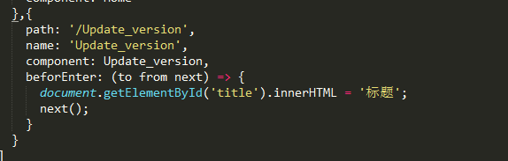
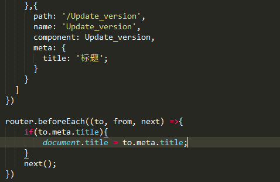
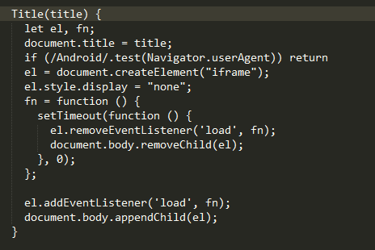

给title一个id,然后在router.js
在router.js
每个守卫方法接收三个参数：
to: Route: 即将要进入的目标 路由对象
from: Route: 当前导航正要离开的路由
next: Function: 一定要调用该方法来 resolve 这个钩子。执行效果依赖 next 方法的调用参数。
next(): 进行管道中的下一个钩子。如果全部钩子执行完了，则导航的状态就是 confirmed (确认的)。
next(false): 中断当前的导航。如果浏览器的 URL 改变了 (可能是用户手动或者浏览器后退按钮)，那么 URL 地址会重置到 from 路由对应的地址。
next(’/’) 或者 next({ path: ‘/’ }):跳转到一个不同的地址。当前的导航被中断，然后进行一个新的导航。你可以向 next 传递任意位置对象，且允许设置诸如 replace: true、name: ‘home’ 之类的选项以及任何用在 router-link 的 to prop 或 router.push 中的选项。
next(error): (2.4.0+) 如果传入 next 的参数是一个 Error 实例，则导航会被终止且该错误会被传递给 router.onError() 注册过的回调。
确保要调用 next 方法，否则钩子就不会被 resolved。
export一个js，在组件里就可以修改title了
